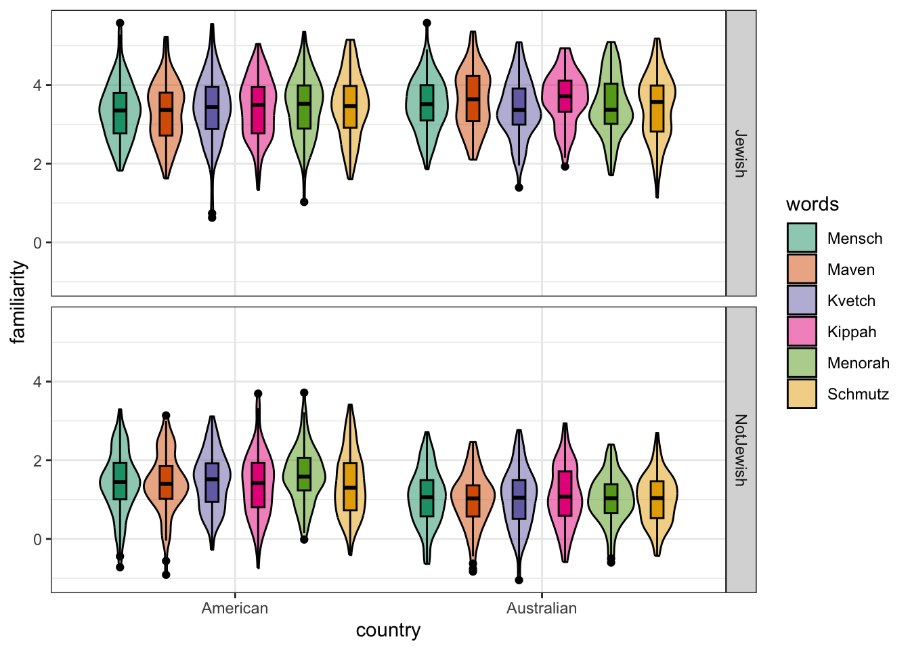
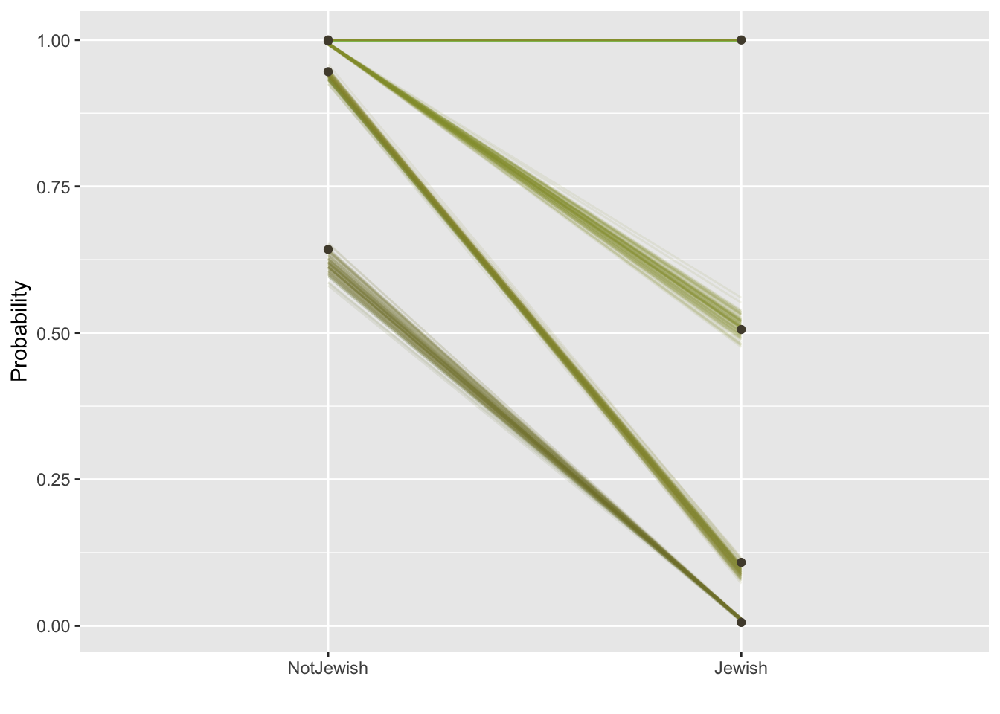

I received an enquiry from Caroline Hendy, for a project she is running with Emma Breslow, about running ordinal models to detect differences between two intersecting groups of individuals. I don’t have that much experience in running ordinal models so here I am working through the problem!
Data
First off I will generate some fake data mimicking the data structure in the original problem. The project is looking to understand the patterns of language change across intersecting social identities: Jewish vs not Jewish and Australian vs American. Jewish communities across the world are generally connected through cultural and language, and most will be familiar, and use a number of Yiddish words: Chutzpah, Schlep, and Speil to name a few. Jewish communities exist across different countries and cultural environments, such as in Australia and America, so does familiarity with Yiddish words vary between these communities? And how does familiarity with these words vary amongst non-Jewish people in each of these countries?
Specifically, the hypotheses are:
Jewish people will be more familiar with all these words that non-Jewish people (regardless of Country)
Non-Jewish Americans will be more familiar with the words than Non-Jewish Australians.
The response variable is a four-point scale in which participants are asked about their familiarity with various Yiddish words: 1 = Never heard it; 2 = Heard but don’t understand; 3 = Heard, understood, but don’t use; 4 = Heard, understood, and use. We also have two categories which each individual can fit into: Australian or American, and Jewish or not Jewish. Let’s create some fake data.
A package designed for creating simulated data is faux, maintained by Lisa DeBruine. I’ve not used this package before, but I have always heard good things. You can install it directly from CRAN, or from github for the development version (see the faux website for details).
I am going to set up the design so that there is only a small difference between countries, and a large difference between communities. That is, a person who is Australian should be slightly less familiar than an American with the set of words, but Jewish people should generally be more familiar with these words than non-Jewish people, regardless of country.
As far as I can tell, faux can’t create ordinal variables, but we can mimic the effect by forcing the randomly creating variables to the nearest integer. I also load all the packages used throughout this post here.
# packages for dealing with data and plottinglibrary(tidyr)library(dplyr)library(rlang)library(stringr)library(ggplot2)library(bayesplot)# packages for simulating datalibrary(faux)# modelling packageslibrary(brms)library(emmeans)# Build the model design## Subjects can be from these countries, and these communities (varies "between" subjects")between =list(country =c("American", "Australian"), jewish =c("Jewish", "NotJewish"))# All subject will see these words ('varies within subjects')words =c("Mensch", "Maven", "Kvetch", "Kippah", "Menorah", "Schmutz")within =list(words = words)# This sets the average value for each category and word. I assume all words have the same impact# to make things simpler to interpret latermu =data.frame(American_Jewish =rep(3.5, length(words)), # Jewish people score around 3.5 (of 4) on averageAustralian_Jewish =rep(3.5, length(words)),American_NotJewish =rep(1.5, length(words)), # American non-Jewish people score 1.5 (of 4) on averageAustralian_NotJewish =rep(1.0, length(words)), # Australian non-Jewish people score 1.5 (of 4) on averagerow.names = words)# Simulate some datadf =sim_design(between = between, within = within, mu = mu,n =100, sd =0.75, dv ="familiarity", plot =FALSE)# plot the altered designfaux::plot_design(df)

# Make the dataset longdf =pivot_longer(df, cols =c("Mensch", "Maven", "Kvetch", "Kippah", "Menorah", "Schmutz"), values_to ="familiarity")# Force the data to be integer using bankers rounding (i.e. above 0.5 goes up, below goes down)df$familiarity =round(df$familiarity)# Since the simulation is continuous, it doesn't always work (sometimes we get 5s and 0s). # I fix the data to be between 1 and 4df$familiarity[df$familiarity <1] =1df$familiarity[df$familiarity >4] =4# ensure levels are ordered correctly df$jewish =factor(df$jewish, levels =c("NotJewish", "Jewish"))
Building the ordinal model
I am going to follow along with the description of ordinal models from Richard McElreath’s Statistical Rethinking (SR) and apply the discussion there to my own problem.
An ordered category variable model requires the addition of a special constraint compared to continuous models - specifically, the ordering of categories. It would be incorrect to model each level of familiarity as an independent category, because to get between non-adjacent categories we would need to pass through the intervening ones. In this case, if you have never heard a word you will never have used it, once you hear the word you can use it, which might follow with you understanding the word, and then using and understanding the word. It is also not appropriate to treat the variable as continuous because that would assume that moving between all steps is equally likely (in a continuous regression there will be just one slope parameter), but it might be the case that moving from never heard (1) to heard but don’t use (2) is easier than moving from heard, understood and don’t use (3), to heard, understood and use (4).
Thus, we have a task for ordinal models. There are many types of ordinal models, but we are going to use a cumulative link models because they are most commonly used with respect to Likert scale type variables.
Cumulative link models aim describe the data as the probability of a particular value occurring, or any smaller value. Or, as the cumulative probability of a response. For this example, we might be interested in the probability of someone having heard the word but not understanding it (a Likert value of 2, or lower).
We can directly calculate the cumulative probabilities from the data, following McElreath’s code in chapter 12.3. I show in the next section of code how to manually calculate the cumulative probabilities of each category (without any predictors), and compare that to the intercepts of a cumulative link model.
## Data calculation# proportion of responses in each likert categorypr_k =table(df$familiarity) /nrow(df)# calculate the cumulative sum of each likert categorycum_pr_k =cumsum(pr_k)# convert them to the log-odds scale using a custom functionlogit =function(x) log(x / (1- x))logit_cumprk =logit(cum_pr_k)## Model# The logit results should be comparable to the intercept values of the ordinal modelinits =list(`Intercept[1]`=-0.8,`Intercept[2]`=0,`Intercept[3]`=1)b1 =brm(data = df, family = cumulative, familiarity ~1,prior =prior(normal(0, 1.5), class = Intercept),iter =2000, warmup =1000, cores =4, chains =1,init =list(inits), # here we add our start values file ="intercept") # Log-odd comparisonsmatrix(c(logit_cumprk[1:3],# the log-odds scale of the cut-points in the raw datafixef(b1)[,1]), # The intercepts for each cumulative cut point matches the log-oddsnrow =2, byrow =TRUE,dimnames =list(c("Data Log-odds", "Model Log-odds"), 1:3))
1 2 3
Data Log-odds -0.7346887 0.10843947 1.109754
Model Log-odds -0.8409145 0.03934409 1.073441
# Probability comparisonsmatrix(c(cum_pr_k[1:3],# Cumulative probabilities in the datainv_logit_scaled(fixef(b1)[,1])), # Convert the intercepts to probabilitiesnrow =2, byrow =TRUE,dimnames =list(c("Data probabilities", "Model probabilities"), 1:3))
1 2 3
Data probabilities 0.3241667 0.5270833 0.7520833
Model probabilities 0.3013422 0.5098348 0.7452507
This intercept model doesn’t really tell us anything interesting, other than showing that we can more or less reproduce the cumulative probabilities in the data. In this case, the intercept model seems to slightly overestimate probabilities between 1 and 2, and underestimate changes between 2 and 3, and is pretty good at estimating probabilities between 3 and 4. Let’s get onto asking some more interesting questions.
Hypothesis 1: Jewish people will be more familiar with all these words
The benefit of generating the data is that we know what the result should be. After changing the data to make it fit ordinal assumptions, we know that the cumulative probability for a Jewish person knowing these words (i.e. a Likert score of 3 or better) is approximately 99%, and a non-Jewish person is 51%. These cumulative probability scores should be approximately returnable by the model, if the fit is any good.
In the next code section, we run the same model as above, but now with a single predictor indicating whether the participant was Jewish or not.
# Data summarytapply(as.numeric(df$familiarity), df$jewish, summary)
$NotJewish
Min. 1st Qu. Median Mean 3rd Qu. Max.
1.000 1.000 1.000 1.413 2.000 4.000
$Jewish
Min. 1st Qu. Median Mean 3rd Qu. Max.
1.00 3.00 3.00 3.38 4.00 4.00
# Single predictor modelb2 =brm(data = df, family = cumulative, familiarity ~ jewish,prior =c(prior(normal(0, 1.5), class = Intercept),prior(normal(0, 1.5), class = b)), # Add a normal prior for the beta coefsiter =2000, warmup =1000, cores =4, chains =1,init =list(inits), # here we add our start values that we used for the complete datasetfile ="jewish_only")
To show that the model is representing the data, we can calculate the cuts from the raw data. The intercepts in this model represent someone who is not Jewish, so the intercept values should be pretty similar to the cuts for non-Jewish people.
# function to calculate cuts following the code from abovecut_func =function(f){ pr_k =table(f) /length(f) cum_pr_k =round(cumsum(pr_k), 5)# logit function from above logit =function(x) log(x / (1- x)) logit_cumprk =logit(cum_pr_k)list(cum_pr_k = cum_pr_k, logit_cumprk = logit_cumprk)}raw_data =tapply(df$familiarity, df$jewish, cut_func)# as log oddsround(raw_data$NotJewish$logit_cumprk, 2)
1 2 3 4
0.59 2.86 6.39 Inf
round(fixef(b2)[1:3,1], 2) # only looking at the intercepts
This model is doing a pretty good job at estimating the cumulative probability between Jewish and non-Jewish participants.
Why are you subtracting the coefficient for Jewish participants? Wouldn’t you normally add the coefficients?
An excellent question. For this we need to look at the maths underneath the model. I take the model from page 386 of McElreath’s Statistical Rethinking:
Why is the linear model \(\phi\) subtracted from each intercept? Because if we decrease the log-cumulative-odds of every outcome value k below the maximum, this necessarily shifts the probability mass upwards towards the higher outcome values.
I understand this as a decision to improve interpretability. If \(\phi_i\) was added to \(\alpha_k\), we could get the same model predictions, but \(\beta > 0\) would mean increasing \(x\) would result in decrease in the response. Using \(\alpha_k - \phi_i\) means that increasing \(x\) means an increase in the response. So, subtracting the coefficient is done to make the results more intuitive.
nd =data.frame(jewish =c("Jewish", "NotJewish"))fitted_df =fitted(b2, newdata = nd, summary =FALSE)fitted_df2 <-rbind(fitted_df[, , 1], fitted_df[, , 2], fitted_df[, , 3], fitted_df[, , 4]) %>%data.frame() %>%set_names(pull(nd, jewish)) %>%mutate(response =rep(1:4, each =n() /4),draw =rep(1:1000, times =4)) %>%pivot_longer(-c(draw, response),names_to =c("jewish"),values_to ="pk") %>%mutate(jewish = jewish %>%factor(., levels =c("NotJewish", "Jewish")))plot_df = fitted_df2 %>%# this will help us define the three panels of the triptychmutate(facet =factor(str_c("jewish=", jewish))) %>%# these next three lines allow us to compute the cumulative probabilitiesgroup_by(draw, facet, jewish) %>%arrange(draw, facet, jewish, response) %>%mutate(probability =cumsum(pk)) %>%ungroup() %>%# these next three lines are how we randomly selected 50 posterior drawsnest(data =-draw) %>%slice_sample(n =100) %>%unnest(data) %>%mutate(group =paste0(draw, response))# plot!library(ggthemes)ggplot(data = plot_df, aes(x = jewish, y = probability)) +geom_line(aes(group =as.character(interaction(draw, response)), color = probability),alpha =1/10) +geom_point(data = df %>%# wrangle the original data to make the dotsmutate(jewish = jewish %>%factor(., levels =c("NotJewish", "Jewish"))) %>%group_by(jewish) %>%count(familiarity) %>%mutate(probability =cumsum(n /sum(n)),facet =factor(str_c("jewish=", jewish))),color =canva_pal("Green fields")(4)[2]) +scale_color_gradient(low =canva_pal("Green fields")(4)[4],high =canva_pal("Green fields")(4)[1]) +xlab("") +ylab("Probability") +theme(legend.position ="none")

This graph looks a little complicated. The black dots in the graph are the cumulative probability values calculated directly form the data and the lines represent the models expectations, with the variability of the lines indicating error. Focusing on the Not Jewish (left) column of the graph, the lowest dot and line is at around 0.62, meaning the data and model expect around 62% of non-Jewish people to have scored a 1 on the likert scale (Never heard it), for Jewish people, the equivalent proportion is 1%.
So how can we conclude that Jewish participants are more familiar with these words that non-Jewish participants, with confidence.
Hypothesis 2: Are non-Jewish Australians less familiar with these words that Non-Jewish Americans?
We have previously modeled a main effect of being Jewish and it’s relationship to Yiddish word familiarity. Now we want to see if there is a national effect - being in Australia, or in America. Specifically, the interest is in whether non-Jewish people from America, where Jewish culture is widely prominent, are more familiar with Yiddish words than non-Jewish Australians. We also want to do this, while keeping the Jewish effect in the model.
Since the baseline level of the previous model is being Jewish, adding a predictor for country will tell us whether non-Jewish Australians or non-Jewish Americans are different or not, and we don’t need to worry about fancy interactions.
b3 =brm(data = df, family = cumulative, familiarity ~ jewish + country,prior =c(prior(normal(0, 1.5), class = Intercept),prior(normal(0, 0.5), class = b)),iter =2000, warmup =1000, cores =4, chains =1,init =list(inits), # here we add our start values file ="jewish_country") fixef(b3)
# as probabilities round(inv_logit_scaled(fixef(b3)[4:5,1]), 4)
jewishJewish countryAustralian
0.9929 0.3671
This tells us that being in Australia decreases the probability of knowing a Jewish word, by approximately 63%.
However, by adding a second categorical variable, we are changing the interpretation of the Jewishness effect. Now, the coefficient for Jewishness will indicate the expected value of a Jewish Australian, because the baseline level of the Country predictor is Australian. Below we see that the coefficient for Jewishness in the model has changed as a result.
# Without Country as a predictorfixef(b2)["jewishJewish",]
So, how can we know the main effect of Jewishness, and maintain the non-Jewish country comparison in the same model?
Directly testing this is impossible. Adding the second binary variable means that the reference level for the model will always mean an individual will be one of two categories, meaning we cannot retreieve a main effect of Jewishness. We could maintain the main effect of Jewishness by using contrast coding. This would mean the effect of Jewishness is the average effect across both countries, but it would now mean the coefficient for country is showing us the deviation from the overall mean, and not a comparison between country categories.
Instead, to have both a main effect of Jewishness, and a comparison between the non-Jewish country categories, we will need to invoke post-hoc comparisons by estimating the marginal means of our effects.
This is easily achieved in R through the package emmeans, however, its application to Bayesian ordinal models is currently experimental. So, we must calculate the effects manually. They are, however, not experiemental in frequentist ordinal models, so we can compare the results to the frequentist results to make sure we are working things out correctly.
First I quickly work out the results using the frequentist approach.
library(ordinal)# Run the ordinal modeldf$familiarity =factor(df$familiarity)b3.1=clm(familiarity ~ jewish + country,data = df)clm_marginal =emmeans(b3.1, ~ familiarity | jewish, mode ="prob")clm_marginal
The code above tests the marginal mean of Jewishness, averaging over the levels of country, for each rating value. Because the model doesn’t account for variations in words, it also averages over the effect of these, but because the model doesn’t account for this difference, not because of the marginal mean calculation.
How is this calculated? Marginal means are built off averaging the results from a reference grid. We can look at the reference grid for our frequentist marginal means in the object we just created. I just show the first line for convenience.
What we see is every possible combination of factors in our model: Jewish or Not Jewish, Australian or American, and the three threshold parameters. This first line is going to give us the probability of a Not Jewish person providing a value less than 2 (i.e. 1 Never heard), average across the effect of country. We do this by putting a value into the cells we want to average over (all 1|2 cells that are Not Jewish) that is weighted equally across all categories. Since we have two categories (Australia and America), the value is 0.5, but if there were four categories, the value would be 0.25.
We can calculate the probability of each state that is coded greater than 1 by multiplying this vector with the appropriate coefficients, which are also held in the marginal means object. All states coded as 0, will obviously equate multiple to zero, but our two conditions coded as 0.5, will give us the weighted probability of that state. We can then simply sum these traits to get the average probability for Not Jewish participants choosing a value of less than 2.
The 0.5 might be confusing, but it is just a faster way of getting the average. We could code all states we are interested in as 1, then divide the summed result by two to get the same result.
A final point, is that because we only estimate three thresholds, but there are four categories, the fourth category is just the remainder of the first three. See below:
# if we calculate the probability for level 4 as we do everything else we get a negative valuesum(clm_marginal@bhat * clm_marginal@linfct[4,])
[1] -0.9942876
# But the remainder is what we a really after:1+sum(clm_marginal@bhat * clm_marginal@linfct[4,])
[1] 0.005712429
To get an understanding of the effect of being Jewish, averaged over country, we can take the ratios between the probabilities to understand how more or less likely an individual from each group is to know. word. For example, in response 2 (have heard, don’t understand) the probability for a Not Jewish person is 0.31, and the probability for a Jewish person is 0.07.
1- (0.07/0.31)
[1] 0.7741935
The ratio of these values tells us that a Jewish Person is 77% less likely to have heard, but not understood a Yiddish word compared to a Non-Jewish person, averaged over their country of origin.
Let’s do the same estimation, but with our Bayesian model.
Bayesian Marginal Means
To save, space I will use the reference grid created by emmeans. The associated coefficients are the sum of all relevant coeffcients to the column in the reference grid, transformed onto the inverse logit scale. There might be a clever way to calculate this, but I do it manually so we can see what is happening. The output is not exactly the same as the frequentist approach because the estimated coefficients are slightly different.
The benefit of an MCMC approach is that rather than just estimating probabilities, we can estimated their posterior distribution, providing a more intuitive understanding of the model estimate and error.